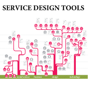

What have I done?
At VTT Technical Research Centre of Finland I have worked as a research scientist on co-creation, co-development, user-centred design, novel user interfaces and new co-design and service design tools at Owela Open Web Lab (see owela.fi) as well as semantic web (see profile.vtt.fi) and content aggregation, big data and distributed real time services and software architectures in international research projects (e.g. ACDC). As a project manager I have prepared and run projects with several b2b and b2c companies as well as governmental institutions.
My previous experience ranges from game development to network hardware installations to broadcast television to assisting in shooting eyes with a laser.
-

- 